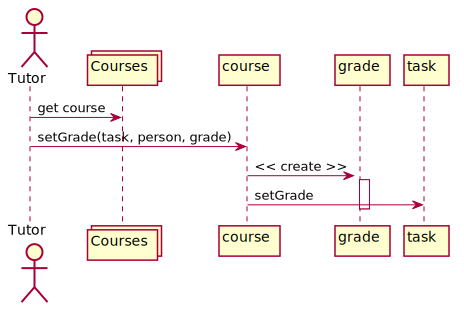
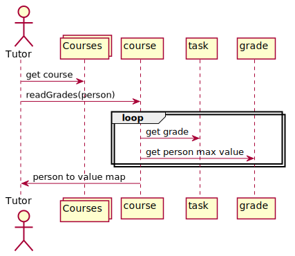

<!doctype html>
<html>
	<head>
		<meta charset="utf-8">
		<title>Реализация классов по диаграммам UML</title>

		<link rel="stylesheet" href="../dist/reset.css">
		<link rel="stylesheet" href="../dist/reveal.css">
		<link rel="stylesheet" href="../dist/theme/beige.css" id="theme">

		<!-- Theme used for syntax highlighted code -->
		<link rel="stylesheet" href="../plugin/highlight/github.css" id="highlight-theme">

		<style>
			.container{
				display: flex;
			}
			.col{
				flex: 1;
			}
		</style>
		

	</head>
	<body>
		<div class="reveal">
			<div class="slides">

                <section data-markdown data-separator="!~~~!" data-separator-vertical="~~~" > 
<script type="text/template">

## Репозиторий

~~~

### Пример проекта

Ниже приведен пример проекта в минимальной версии:

[https://github.com/AltmanEA/GraderMono](https://github.com/AltmanEA/GraderMono)

~~~

### Идентификация

<pre class="Kotlin"><code>
interface Item{
	val name: String
}
</code></pre>

~~~

### Интерфейс репозитория

<pre class="Kotlin"><code>
interface Repo< T : Item> {
	fun add(element: T): Boolean
	fun get(name: String): T?
	fun all(): List< T >
}
</code></pre>

~~~

### Реализация репозитория

<pre class="Kotlin"><code>
class ListRepo< T: Item> : Repo< T > {
	private val shadow = ArrayList< T >()
	override fun add(element: T) =
		shadow.add(element)
	override operator fun get(name: String) =
		shadow.find { it.name == name }
	override fun all(): List< T > = shadow
}
</code></pre>

~~~

### Репозитории в системе

<pre class="Kotlin"><code>
val persons = ListRepo< Person >()
val courses = ListRepo< Course >()
val taskTypes = ListRepo< Type >()
</code></pre>

!~~~!

## Классы

~~~

### Person

<pre class="Kotlin"><code>
open class Person(
	override val name: String
) : Item {
	val courses = ArrayList< Course >()

class Student (
    name: String,
    val group: String
) : Person(name)

class Tutor(
    name: String,
    val post: String
) : Person(name)
</code></pre>

~~~

### Type, Grade

<pre class="Kotlin"><code>
class Type (
	override val name: String,
	val shortname: String
) : Item

class Grade (
    val value: Int,
    val date: LocalDate,
    val student: Student
)
</code></pre>

~~~

### Task

<pre class="Kotlin"><code>
class Task(
    override val name: String,
    val type: Type,
    val description: String = "",
    val maxValue: Int = 1,
    val deadline: LocalDate = LocalDate.now()
) : Item {
    val grades = ArrayList< Grade >()
}
</code></pre>

!~~~!

## Последовательности

~~~

### Диаграмма «Выставление оценки»



~~~

### Действия Tutor

<pre class="Kotlin"><code>
@Test
fun setGradeTest() {
	val math = courses["Math"] ?: fail()
    math.setGrade("UML", "Howard", 1)
    assertEquals(
    	1,
        math.tasks.find { it.name == "UML" }?.grades?.size
    )
}
</code></pre>

~~~

### Действия Course

<pre class="Kotlin"><code>
fun setGrade(
	taskName: String, 
	studentName: String, 
	value: Int, 
	date: LocalDate = LocalDate.now()
) {
	val task = tasks
		.find { it.name == taskName } ?: return
	val student = students
		.find { it.name == studentName } ?: return
    if (value !in 0..task.maxValue) return
    val grade = Grade(value, date, student)
    task.grades += grade
}
</code></pre>

~~~

### Диаграмма «Чтение оценок студента»



~~~

### Действия Tutor

<pre class="Kotlin"><code>
@Test
fun studentGradesTest() {
	val math = courses["Math"] ?: fail()
    math.setGrade("Intro", "Penny", 1)
    math.setGrade("Uml lab", "Penny", 3)
    math.setGrade("Uml lab", "Penny", 4)
    val grades = math.studentGrades("Penny")
    assertEquals(1, grades["Intro"])
    assertEquals(4, grades["Uml lab"])
}
</code></pre>

~~~

### Действия Course

<pre class="Kotlin"><code>
fun studentGrades(studentName: String) =
	tasks.map { task ->
    	val value = task.grades
        	.filter { it.student.name == studentName }
            .maxByOrNull { it.value }
            ?.value ?: 0
        task.name to value
    }.toMap()
</code></pre>

</script>
                </section>

			</div>	
		</div>

		<script src="../dist/reveal.js"></script>
		<script src="../plugin/notes/notes.js"></script>
		<script src="../plugin/markdown/markdown.js"></script>
		<script src="../plugin/highlight/highlight.js"></script>
		<script src="../plugin/menu/menu.js"></script>
		<script>
			Reveal.initialize({
				hash: true,
				width: '90%',
    			height: '100%',
				plugins: [ RevealMarkdown, RevealHighlight, RevealNotes, RevealMenu ],
				menu: {
					custom: [{
						title: 'Home',
						icon: '<i class="fa fa-home">',
						src: '../menu.html'
					}]
				}
			});
		</script>
	</body>
</html>
